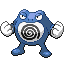
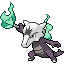
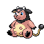
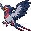
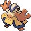
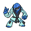
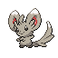
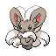
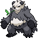

Some Pokémon encountered in the wild in Pokémon Unbound will be holding items. Ranging from berries to evolution stones, catching these Pokémon or using abilities like Thief can allow you to acquire these held items.
While some Pokémon have a 5% or 50% chance of having a held item, others don’t have any wild held items at all.
The table below covers every Wild Pokémon in Pokémon Unbound that has a chance of holding items. We’ve detailed both the common held item (which is held 50% of the time) along with the rare held item (which is held 5% of the time).
Note: If you want to know where to find any of these Pokémon in the wild, take a look at our comprehensive list of Pokémon locations.
| Sprite | Pokémon | Common Item (50%) | Rare Item (5%) |
|---|---|---|---|
| Butterfree | – | Silver Powder | |
 |
Beedrill | – | Poison Barb |
| Mega Beedrill | – | Poison Barb | |
 |
Rattata | – | Chilan Berry |
 |
Alolan Rattata | – | Pecha Berry |
| Raticate | – | Chilan Berry | |
| Alolan Raticate | – | Pecha Berry | |
 |
Spearow | – | Sharp Beak |
 |
Fearow | – | Sharp Beak |
| Arbok | – | Poison Barb | |
| Pikachu | Oran Berry | Light Ball | |
| Raichu | – | Oran Berry | |
| Sandshrew | – | Grip Claw | |
 |
Sandslash | – | Grip Claw |
 |
Clefairy | Leppa Berry | Moon Stone |
 |
Clefable | Leppa Berry | Moon Stone |
| Vulpix | Rawst Berry | Charcoal | |
| Ninetales | Rawst Berry | Charcoal | |
 |
Jigglypuff | Oran Berry | Moon Stone |
 |
Wigglytuff | Oran Berry | Moon Stone |
| Oddish | – | Absorb Bulb | |
 |
Gloom | – | Absorb Bulb |
 |
Vileplume | – | Absorb Bulb |
 |
Paras | Tiny Mushroom | Big Mushroom |
| Parasect | Tiny Mushroom | Big Mushroom | |
| Venomoth | – | Shed Shell | |
 |
Diglett | – | Soft Sand |
| Alolan Diglett | – | Soft Sand | |
| Dugtrio | – | Soft Sand | |
| Alolan Dugtrio | – | Soft Sand | |
 |
Meowth | – | Quick Claw |
| Alolan Meowth | – | Quick Claw | |
| Persian | – | Quick Claw | |
| Alolan Persian | – | Quick Claw | |
 |
Mankey | – | Papaya Berry |
 |
Primeape | – | Papaya Berry |
 |
Growlithe | Rawst Berry | Rawst Berry |
| Arcanine | Rawst Berry | Rawst Berry | |
 |
Poliwhirl | – | King’s Rock |
|  | Poliwrath | – | King’s Rock |
 |
Abra | – | Twisted Spoon |
| Kadabra | – | Twisted Spoon | |
| Alakazam | – | Twisted Spoon | |
| Mega Alakazam | – | Twisted Spoon | |
 |
Machop | – | Focus Band |
 |
Machoke | – | Focus Band |
 |
Machamp | – | Focus Band |
| Tentacool | – | Poison Barb | |
 |
Tentacruel | – | Poison Barb |
 |
Geodude | – | Everstone |
| Graveler | – | Everstone | |
 |
Golem | – | Everstone |
| Ponyta | – | Shuca Berry | |
 |
Rapidash | – | Shuca Berry |
 |
Slowpoke | – | Lagging Tail |
 |
Slowbro | – | King’s Rock |
 |
Magnemite | – | Metal Coat |
 |
Magneton | – | Metal Coat |
 |
Farfetch’d | – | Leek |
| Doduo | – | Sharp Beak | |
 |
Dodrio | – | Sharp Beak |
 |
Seel | Aspear Berry | – |
| Dewgong | Aspear Berry | Never-Melt Ice | |
| Grimer | – | Black Sludge | |
| Muk | Black Sludge | Toxic Orb | |
| Shellder | Pearl | Big Pearl | |
 |
Cloyster | Pearl | Big Pearl |
| Haunter | – | Spell Tag | |
 |
Gengar | – | Spell Tag |
| Mega Gengar | – | Spell Tag | |
| Onix | – | Hard Stone | |
| Exeggcute | – | Psychic Seed | |
 |
Cubone | – | Thick Club |
 |
Marowak | – | Thick Club |
|  | Alolan Marowak | – | Thick Club |
 |
Lickitung | – | Lagging Tail |
 |
Koffing | – | Smoke Ball |
| Weezing | – | Smoke Ball | |
 |
Chansey | Lucky Punch | Lucky Egg |
| Horsea | – | Dragon Scale | |
| Seadra | – | Dragon Scale | |
 |
Goldeen | – | Mystic Water |
 |
Seaking | – | Mystic Water |
| Staryu | Stardust | Star Piece | |
| Starmie | Stardust | Star Piece | |
| Mr. Mime | – | Leppa Berry | |
 |
Jynx | Aspear Berry | Aspear Berry |
| Electabuzz | – | Electirizer | |
 |
Magmar | – | Magmarizer |
| Lapras | Mystic Water | Mystic Water | |
| Ditto | Quick Powder | Metal Powder | |
 |
Snorlax | Leftovers | Leftovers |
| Dratini | – | Dragon Scale | |
| Dragonair | – | Dragon Scale | |
 |
Dragonite | – | Dragon Scale |
| Mew | Lum Berry | Lum Berry | |
| Sentret | – | Oran Berry | |
| Furret | Oran Berry | Sitrus Berry | |
 |
Chinchou | – | Deep Sea Scale |
 |
Lanturn | – | Deep Sea Scale |
 |
Pichu | – | Oran Berry |
 |
Cleffa | Leppa Berry | Moon Stone |
| Igglybuff | Oran Berry | – | |
| Bellossom | – | Absorb Bulb | |
| Sudowoodo | – | King’s Rock | |
 |
Sunkern | – | Coba Berry |
 |
Yanma | – | Wide Lens |
 |
Slowking | – | King’s Rock |
| Misdreavus | – | Spell Tag | |
 |
Girafarig | – | Persim Berry |
 |
Steelix | – | Metal Coat |
| Mega Steelix | – | Metal Coat | |
 |
Qwilfish | – | Poison Barb |
 |
Shuckle | Berry Juice | Berry Juice |
| Sneasel | Grip Claw | Quick Claw | |
| Teddiursa | Oran Berry | Sitrus Berry | |
| Ursaring | Oran Berry | Sitrus Berry | |
 |
Swinub | Aspear Berry | – |
| Piloswine | Aspear Berry | Never-Melt Ice | |
 |
Corsola | – | Luminous Moss |
| Skarmory | – | Metal Coat | |
| Kingdra | – | Dragon Scale | |
 |
Phanpy | – | Passho Berry |
| Donphan | – | Passho Berry | |
| Porygon2 | Up-Grade | Up-Grade | |
 |
Smoochum | Aspear Berry | Aspear Berry |
| Elekid | – | Electirizer | |
 |
Magby | – | Magmarizer |
|  | Miltank | Moomoo Milk | Moomoo Milk |
| Blissey | Lucky Egg | Lucky Egg | |
 |
Ho-Oh | Sacred Ash | Sacred Ash |
| Celebi | Lum Berry | Lum Berry | |
| Poochyena | – | Pecha Berry | |
| Mightyena | – | Pecha Berry | |
 |
Zigzagoon | Potion | Revive |
 |
Linoone | Potion | Max Revive |
| Wurmple | Pecha Berry | Bright Powder | |
 |
Beautifly | – | Shed Shell |
 |
Dustox | – | Shed Shell |
 |
Lotad | – | Mental Herb |
| Lombre | – | Mental Herb | |
 |
Ludicolo | – | Mental Herb |
| Seedot | – | Power Herb | |
| Nuzleaf | – | Power Herb | |
 |
Shiftry | – | Power Herb |
 |
Taillow | – | Charti Berry |
|  | Swellow | – | Charti Berry |
| Wingull | Pretty Wing | – | |
 |
Pelipper | Pretty Wing | Lucky Egg |
 |
Surskit | – | Honey |
| Masquerain | – | Silver Powder | |
 |
Shroomish | Tiny Mushroom | Kebia Berry |
| Breloom | Tiny Mushroom | Kebia Berry | |
| Nincada | – | Soft Sand | |
 |
Whismur | – | Chesto Berry |
| Loudred | – | Chesto Berry | |
 |
Exploud | – | Chesto Berry |
 |
Makuhita | – | Black Belt |
|  | Hariyama | – | King’s Rock |
 |
Nosepass | – | Magnet |
| Skitty | Pecha Berry | Leppa Berry | |
| Delcatty | Pecha Berry | Leppa Berry | |
| Sableye | – | Wide Lens | |
| Mawile | – | Metal Coat | |
| Mega Mawile | – | Metal Coat | |
 |
Aron | – | Hard Stone |
| Lairon | – | Hard Stone | |
 |
Aggron | – | Hard Stone |
| Mega Aggron | – | Hard Stone | |
 |
Plusle | – | Cell Battery |
| Minun | – | Cell Battery | |
| Volbeat | – | Bright Powder | |
| Illumise | – | Bright Powder | |
| Roselia | – | Poison Barb | |
 |
Gulpin | Oran Berry | Sitrus Berry |
 |
Swalot | Oran Berry | Sitrus Berry |
 |
Carvanha | – | Deep Sea Tooth |
 |
Sharpedo | – | Deep Sea Tooth |
| Numel | Rawst Berry | Rawst Berry | |
 |
Camerupt | Rawst Berry | Rawst Berry |
| Mega Camerupt | Rawst Berry | Rawst Berry | |
| Torkoal | – | Charcoal | |
| Spoink | Persim Berry | Tanga Berry | |
| Grumpig | Persim Berry | Tanga Berry | |
| Spinda | – | Chesto Berry | |
 |
Trapinch | – | Soft Sand |
 |
Cacnea | – | Sticky Barb |
 |
Cacturne | – | Sticky Barb |
 |
Zangoose | – | Quick Claw |
 |
Seviper | – | Shed Shell |
| Lunatone | Stardust | Moon Stone | |
| Solrock | Stardust | Sun Stone | |
| Baltoy | – | Light Clay | |
| Claydol | – | Light Clay | |
| Lileep | – | Big Root | |
 |
Cradily | – | Big Root |
 |
Castform | Mystic Water | Mystic Water |
 |
Kecleon | – | Persim Berry |
 |
Shuppet | – | Spell Tag |
 |
Banette | – | Spell Tag |
 |
Mega Banette | – | Spell Tag |
 |
Duskull | – | Spell Tag |
| Dusclops | – | Spell Tag | |
 |
Chimecho | – | Cleanse Tag |
| Absol | – | Life Orb | |
 |
Snorunt | – | Snowball |
| Glalie | – | Never-Melt Ice | |
| Mega Glalie | – | Never-Melt Ice | |
 |
Clamperl | Pearl | Big Pearl |
 |
Huntail | – | Deep Sea Tooth |
| Gorebyss | – | Deep Sea Scale | |
 |
Relicanth | – | Deep Sea Scale |
| Luvdisc | Heart Scale | – | |
| Bagon | – | Dragon Fang | |
| Shelgon | – | Dragon Fang | |
| Salamence | – | Dragon Fang | |
 |
Beldum | – | Metal Coat |
| Metang | – | Metal Coat | |
 |
Metagross | – | Metal Coat |
| Mega Metagross | – | Metal Coat | |
 |
Jirachi | Star Piece | Star Piece |
 |
Starly | – | Yache Berry |
 |
Staravia | – | Yache Berry |
 |
Staraptor | – | Yache Berry |
| Bibarel | Oran Berry | Sitrus Berry | |
| Kricketot | – | Metronome | |
 |
Kricketune | – | Metronome |
| Budew | – | Poison Barb | |
| Roserade | – | Poison Barb | |
| Wormadam | – | Silver Powder | |
| Wormadam (Sandy) | – | Silver Powder | |
| Wormadam (Trash) | – | Silver Powder | |
| Mothim | – | Silver Powder | |
 |
Combee | Honey | Honey |
 |
Vespiquen | – | Poison Barb |
 |
Buizel | – | Wacan Berry |
| Floatzel | – | Wacan Berry | |
| Cherubi | – | Miracle Seed | |
| Cherrim | – | Miracle Seed | |
| Cherrim (Sun Shine) | – | Miracle Seed | |
 |
Drifblim | – | Air Balloon |
 |
Buneary | Pecha Berry | Chople Berry |
 |
Lopunny | Pecha Berry | Chople Berry |
 |
Glameow | – | Cheri Berry |
 |
Purugly | – | Cheri Berry |
| Chingling | – | Cleanse Tag | |
| Stunky | – | Pecha Berry | |
 |
Skuntank | – | Pecha Berry |
 |
Bronzor | – | Metal Coat |
 |
Bronzong | – | Metal Coat |
 |
Mime Jr. | – | Leppa Berry |
 |
Happiny | Oval Stone | Lucky Egg |
 |
Chatot | – | Metronome |
 |
Spiritomb | Smoke Ball | Smoke Ball |
 |
Gible | – | Haban Berry |
 |
Gabite | – | Haban Berry |
 |
Garchomp | – | Haban Berry |
| Munchlax | Leftovers | Leftovers | |
 |
Skorupi | – | Poison Barb |
 |
Drapion | – | Poison Barb |
 |
Croagunk | – | Black Sludge |
| Toxicroak | – | Black Sludge | |
 |
Finneon | – | Rindo Berry |
 |
Lumineon | – | Rindo Berry |
 |
Snover | – | Never-Melt Ice |
| Abomasnow | – | Never-Melt Ice | |
| Weavile | Grip Claw | Quick Claw | |
 |
Magnezone | – | Metal Coat |
 |
Lickilicky | – | Lagging Tail |
 |
Electivire | – | Electirizer |
| Magmortar | – | Magmarizer | |
 |
Yanmega | – | Wide Lens |
| Probopass | – | Magnet | |
| Dusknoir | – | Spell Tag | |
| Froslass | – | Babiri Berry | |
 |
Shaymin | Lum Berry | Lum Berry |
| Pansage | Oran Berry | Leaf Stone | |
 |
Simisage | Oran Berry | Leaf Stone |
| Pansear | Oran Berry | Fire Stone | |
| Simisear | Oran Berry | Fire Stone | |
 |
Panpour | Oran Berry | Water Stone |
 |
Simipour | Oran Berry | Water Stone |
 |
Blitzle | Cheri Berry | – |
 |
Zebstrika | Cheri Berry | – |
| Roggenrola | Everstone | Hard Stone | |
| Boldore | Everstone | Hard Stone | |
| Gigalith | Everstone | Hard Stone | |
| Audino | Oran Berry | Sitrus Berry | |
| Tympole | Pecha Berry | – | |
| Palpitoad | Pecha Berry | – | |
 |
Seismitoad | Pecha Berry | – |
| Throh | – | Expert Belt | |
|  | Sawk | – | Expert Belt |
 |
Sewaddle | – | Mental Herb |
 |
Swadloon | – | Mental Herb |
| Leavanny | – | Mental Herb | |
| Venipede | – | Poison Barb | |
| Whirlipede | Pecha Berry | Poison Barb | |
| Scolipede | Pecha Berry | Poison Barb | |
 |
Cottonee | Pecha Berry | Absorb Bulb |
| Whimsicott | – | Absorb Bulb | |
 |
Petilil | – | Absorb Bulb |
| Lilligant | – | Absorb Bulb | |
 |
Basculin | – | Deep Sea Tooth |
| Basculin | – | Deep Sea Scale | |
 |
Sandile | – | Black Glasses |
 |
Krokorok | – | Black Glasses |
| Krookodile | – | Black Glasses | |
 |
Darumaka | Rawst Berry | – |
| Darmanitan | Rawst Berry | – | |
 |
Maractus | – | Miracle Seed |
| Dwebble | – | Hard Stone | |
 |
Crustle | – | Hard Stone |
 |
Scraggy | – | Shed Shell |
 |
Scrafty | – | Shed Shell |
 |
Yamask | – | Spell Tag |
 |
Cofagrigus | – | Spell Tag |
 |
Trubbish | – | Black Sludge |
| Garbodor | Black Sludge | Nugget | |
|  | Minccino | Chesto Berry | – |
|  | Cinccino | Chesto Berry | – |
 |
Gothita | Persim Berry | – |
 |
Gothorita | Persim Berry | – |
 |
Gothitelle | Persim Berry | – |
 |
Solosis | Persim Berry | – |
 |
Duosion | Persim Berry | – |
 |
Reuniclus | Persim Berry | – |
 |
Vanillite | – | Never-Melt Ice |
 |
Vanillish | Casteliacone | Never-Melt Ice |
| Vanilluxe | Never-Melt Ice | Casteliacone | |
| Emolga | Cheri Berry | Cheri Berry | |
 |
Foongus | Tiny Mushroom | Big Mushroom |
| Amoonguss | Tiny Mushroom | Big Mushroom | |
| Ferroseed | – | Sticky Barb | |
 |
Ferrothorn | – | Sticky Barb |
 |
Cubchoo | Aspear Berry | – |
| Beartic | Aspear Berry | – | |
| Cryogonal | – | Never-Melt ice | |
 |
Stunfisk | – | Soft Sand |
 |
Druddigon | – | Dragon Fang |
 |
Golett | – | Light Clay |
| Golurk | – | Light Clay | |
 |
Heatmor | – | Flame Orb |
| Volcarona | Silver Powder | Silver Powder | |
 |
Meloetta | Star Piece | Star Piece |
 |
Pancham | – | Mental Herb |
|  | Pangoro | – | Mental Herb |
| Hawlucha | – | King’s Rock | |
| Carbink | – | Shed Shell | |
 |
Goomy | – | Shed Shell |
| Pumpkaboo (XL) | Miracle Seed | Miracle Seed | |
| Gourgeist (XL) | Miracle Seed | Miracle Seed | |
 |
Pikipek | – | Oran Berry |
| Trumbeak | – | Sitrus Berry | |
| Toucannon | – | Rawst Berry | |
 |
Yungoos | – | Pecha Berry |
 |
Gumshoos | – | Pecha Berry |
 |
Charjabug | – | Cell Battery |
| Crabrawler | – | Aspear Berry | |
| Crabominable | – | Cheri Berry | |
 |
Oricorio (Baile) | Red Nectar | Honey |
| Oricorio (Pom-Pom) | Yellow Nectar | Honey | |
| Oricorio (Pa’u) | Pink Nectar | Honey | |
| Oricorio (Sensu) | Purple Nectar | Honey | |
| Cutiefly | Honey | Honey | |
 |
Ribombee | Honey | Honey |
| Mareanie | – | Poison Barb | |
| Toxapex | – | Poison Barb | |
| Mudbray | – | Light Clay | |
 |
Mudsdale | – | Light Clay |
| Dewpider | – | Mystic Water | |
 |
Araquanid | – | Mystic Water |
| Fomantis | – | Miracle Seed | |
 |
Lurantis | – | Miracle Seed |
| Morelull | Tiny Mushroom | Big Mushroom | |
 |
Shiinotic | Big Mushroom | Tiny Mushroom |
| Salandit | – | Smoke Ball | |
 |
Salazzle | – | Smoke Ball |
 |
Bounsweet | – | Grassy Seed |
 |
Steenee | – | Grassy Seed |
| Tsareena | Grassy Seed | – | |
| Comfey | – | Misty Seed | |
 |
Sandygast | – | Spell Tag |
| Palossand | – | Spell Tag | |
 |
Minior | – | Star Piece |
 |
Turtonator | – | Charcoal |
| Togedemaru | – | Electric Seed | |
| Mimikyu | – | Chesto Berry | |
| Bruxish | – | Razor Fang | |
 |
Drampa | – | Persim Berry |
 |
Jangmo-o | – | Razor Claw |
 |
Hakamo-o | – | Razor Claw |
| Kommo-o | Razor Claw | – |